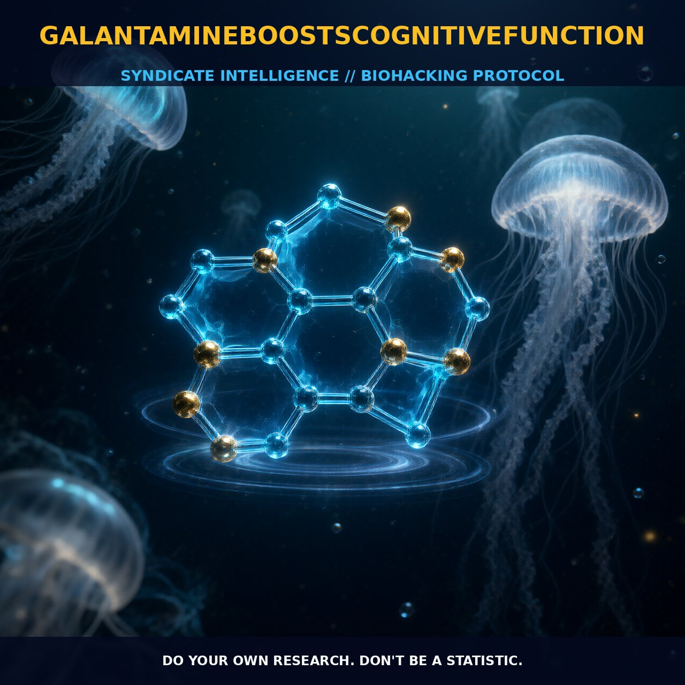

Enhancing Cognitive Function with Galantamine

1. The Mechanism
Galantamine is an acetylcholinesterase (AChE) inhibitor, meaning it blocks the enzyme that breaks down acetylcholine (ACh) in the brain. By inhibiting AChE, Galantamine allows for increased levels of acetylcholine, which is a neurotransmitter crucial for cognitive functions such as memory, attention, and learning. The increased ACh levels enhance synaptic transmission, leading to improved cognitive processes.
Additionally, there is some evidence suggesting that Galantamine acts as an acetylcholine agonist, further boosting ACh activity by directly stimulating ACh receptors. This dual action—both inhibiting ACh breakdown and potentially stimulating ACh receptors—provides a robust boost to cholinergic signaling in the brain.
The rapid absorption and relatively long half-life of Galantamine mean it reaches peak plasma levels about an hour after ingestion and remains active in the body for up to 48 hours. This prolonged presence allows for sustained cognitive enhancement over an extended period. Galantamine's mechanism of action involves binding to AChE and changing its conformation, which reduces the enzyme’s ability to break down acetylcholine. This binding is reversible, allowing for dynamic regulation of ACh levels without the need for continuous high dosing.
The increased ACh levels can modulate the activity of cholinergic receptors, particularly nicotinic and muscarinic receptors, enhancing their function and potentially leading to improved cognitive performance. The enhanced cholinergic signaling can influence various neural pathways involved in cognitive functions, such as those associated with the hippocampus and prefrontal cortex, regions critical for memory and executive function.
2. Biological Leverage
Galantamine exerts its cognitive benefits through its impact on the cholinergic system, which is fundamental to cognitive processes. By increasing acetylcholine levels, Galantamine can enhance synaptic plasticity, a key factor in learning and memory formation. The increased ACh can also influence the modulation of other neurotransmitters, such as glutamate, through its effects on nicotinic receptors. This can enhance neural signaling and improve cognitive flexibility and attention.
Furthermore, the enhancement of cholinergic signaling can support the activity of neural circuits involved in cognitive tasks, such as those related to working memory and executive function. The modulation of acetylcholine levels via Galantamine can also have an impact on REM sleep, which is associated with memory consolidation and cognitive processing. By facilitating the entry into REM sleep, Galantamine can enhance the neural processes involved in dream formation and cognitive consolidation. This can lead to more vivid and potentially more meaningful dreams, which may be beneficial for cognitive processing and creativity.
The increased cholinergic activity can influence the brain's arousal states, potentially enhancing alertness and attention. The prolonged half-life of Galantamine allows for sustained cognitive enhancement, making it a reliable tool for biohackers seeking to optimize cognitive performance over an extended period.
3. Tactical Implementation
To maximize the cognitive benefits of Galantamine, it is recommended to combine it with choline supplements. Choline is a precursor to acetylcholine and can enhance the effects of Galantamine by increasing the availability of ACh precursors. A typical dose of Galantamine ranges from 4 to 8 mg, with 250 to 500 mg of choline, either choline bitartrate or choline citrate. This combination can significantly boost ACh levels and enhance cognitive functions such as memory, attention, and learning.
It is important to avoid using Galantamine in pre-mixed formulations with other supplements, as these may interfere with its effects or introduce unnecessary variables. Timing is crucial for the effectiveness of Galantamine. Taking it after 4 to 5 hours of sleep can optimize its impact on cognitive functions and dream recall. This timing aligns with the natural fluctuations of acetylcholine levels during the sleep-wake cycle, enhancing the potential for cognitive benefits.
To avoid building tolerance and maintaining effectiveness, it is advisable to take Galantamine every other night or less frequently. Mixing Galantamine with other nootropics, such as Piracetam, can also enhance its cognitive effects. However, it is important to note that Piracetam may counteract the dream-inducing properties of Galantamine, potentially affecting dream recall. Piracetam can be used after a lucid dream attempt to reduce sensitivity to Galantamine and prevent desensitization.
This combination can help maintain the effectiveness of Galantamine over time. It is also advisable to space out the use of Galantamine over a period of three days to avoid building resistance. Monitoring side effects such as nausea, dizziness, and muscle cramps is crucial, as these can indicate the need to adjust the dosage or timing. By carefully managing dosage and timing, biohackers can optimize the cognitive benefits of Galantamine and enhance their overall cognitive performance.
Prostar Life Hack
To maximize the cognitive benefits of Galantamine, combine it with choline supplements and take it every other night after 4 to 5 hours of sleep for optimal cognitive function and dream recall.
[ AUTHOR: LEAD TECHNICAL RESEARCHER ]